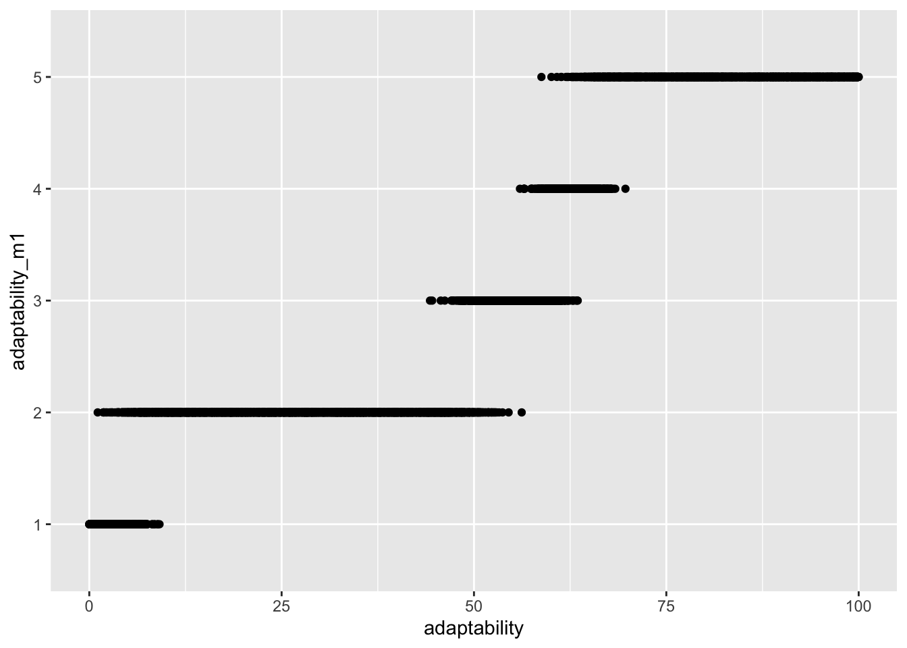

The line between SEM and classic regression starts to blur when we realize we can mix-and-match latent and observed variables in a regression, defining whichever relationships make the most sense given our background knowledge.
A traditional way of incorporating a CFA measurement model into a fuller regression analysis proceeds in two steps:
first you fit the CFA model,
then you fit the substantive regression, incorporating the latent variable into the regression by generating factor scores from the CFA model for each observation and including those as a regression covariate.
But this approach is unsatisfactory because factor scores are a function of the CFA model’s parameter estimates (the estimates of the factor loadings), about which there is uncertainty. So if we only give our substantive regression model a point-estimate factor score from the CFA model, we ignore the uncertainty contained in the standard errors of the CFA model’s factor loading estimates. This is the approach taken by Kankaraš, Feron, and Renbarger (2019); they use point-estimate factor scores as predictors in subsequent regressions. In some cases they even do this iteratively, fitting measurement models on point-estimate factor scores from measurement models fit on point-estimate factor scores, and using those point-estimates as regression predictors! In their analysis they don’t even report the standard errors of the factor loadings from their measurement models.
A better option is to fit a Bayesian model that carries out both the measurement model and the substantive regression model simultaneously, so that the model can incorporate its uncertainty from the CFA model into its substantive parameter estimates and predictions. This section provides an example of how to implement just such a Bayesian model in a survival analysis context in STAN via the brms R package.
5.1 Background and Data Simulation
library(tidyverse)
── Attaching core tidyverse packages ──────────────────────── tidyverse 2.0.0 ──
✔ dplyr 1.1.2 ✔ readr 2.1.4
✔ forcats 1.0.0 ✔ stringr 1.5.0
✔ ggplot2 3.4.2 ✔ tibble 3.2.1
✔ lubridate 1.9.2 ✔ tidyr 1.3.0
✔ purrr 1.0.2
── Conflicts ────────────────────────────────────────── tidyverse_conflicts() ──
✖ dplyr::filter() masks stats::filter()
✖ dplyr::lag() masks stats::lag()
ℹ Use the conflicted package (<http://conflicted.r-lib.org/>) to force all conflicts to become errors
library(ordinal)
Attaching package: 'ordinal'
The following object is masked from 'package:dplyr':
slice
For this example we’ll simulate some data related to the subject matter of Kankaraš, Feron, and Renbarger (2019). Specifically, we’ll simulate some data in which latent social and emotional skills predict time-to-employment to varying degrees. More specifically, here is what the dataset should contain:
n participants in a skills training program;
Some continuous and categorical demographic variables for each participant, such as age, gender priority group (this should be TRUE/FALSE), barriers to employment, and n previous services accessed.
a latent variable called ‘communication’ with an arbitrary scale of 0-100.
a scale of 5 measurements each for this latent variable, each on a likert scale from 1-5. These should each be a function of the corresponding latent variable plus noise, where the degree of correlation should be controllable by the user via function arguments.
the outcome variable, time, which should be a function of the latent variables and the demographhic variables and noise
a status variable indicating whether time refers to time-to-employment or time-to-censoring. This should be random for non-informative censoring, with the probability of censoring being controllable by the user.
For now we’ll assume the latent variables are not correlated, even though this is a bit of a silly assumption in practice.
One improvement we can make on the traitional factor analyses we looked at in previous sections is that we can specify our measurement model with ordinal relationships between the factor and its measurements. This makes sense given that the measurements are likert, andd it doesn’t make sense to assume likert variables move linearly.
It would be most efficient to just define a function that creates the dataset we need based on various parameters. But I’ll instead go step-by-step and explain each choice as we go. First we can define the dataframe and do the easy work of adding the variables that don’t depend on any of the others:
n =3000dat <-tibble(# Simulate demographic variablesage =runif(n, 20, 60),gender_priority_group =sample(c(TRUE, FALSE), n, replace =TRUE),barriers_to_employment =rpois(n, lambda =1),previous_services =rpois(n, lambda =3), # Simulate latent variables on an arbitrary scaleadaptability =runif(n, 0, 100),collaboration =runif(n, 0, 100),communication =runif(n, 0, 100))
Now we’ll simulate the likert-scale ‘measurements’ of the latent variables we defined above. The first step will be to define the threshold coefficients, or what McElreath (2020) calls ‘cutpoints’. These are just the intercepts of the linear models that define each of the cumulative probabilities via a logit link. Another way of thinking about these is that they are the logit of each cumulative probability when the substantive predictors in the model are all equal to 0.
So how shall we choose these for our example? We can do whatever we want. Let’s imagine a situation where the people grading these participants have a tendency to give out lots of 3s and 5s, and relatively very few of the other options. Since we’ve defined our latent variables on an arbitrary scale from 1-100, we can define the threshold coefficients to slice up that scale to give us the pattern we want:
theta <-c(5, # You get a 1 if your true 'latent' score is <5 and all predictors are 0. 50, # You get a 2 if your true 'latent' score is between 5 and 50.60, # You get a 3 if your true 'latent' score is between 50 and 60.65# You get a 4 if your true 'latent' score is between 60 and 65.# NA # You get a 5 if your true 'latent' score is >65.)
Now we can use those cutpoints to generate some data. Here I use a slightly modified version of the simulation approach for ordinal outcomes given in this STAN forum thread by Conor Goold.
# Define a function to generate a single ordinal data point# @K number of ordinal categories# @theta vector of latent cutpoints# @eta linear predictorgen_ordinal_measurements <-function(K, theta, eta){if(length(theta) != (K -1))stop(paste0("theta must have length ", K -1, " not ", length(theta))) n <-length(eta) result <-numeric(n)for(i in1:n) { probs <-numeric(K)for(k in1:K){if(k ==1) prev_thresh =-Infelse prev_thresh = theta[k -1]if(k == K) next_thresh =Infelse next_thresh = theta[k] probs[k] =plogis(next_thresh - eta[i]) -plogis(prev_thresh - eta[i]) } result[i] <-sample(K, 1, prob=probs) }return(result)}# Simulate the measured outcomesdat <- dat |># Simulate items for latent variable measurementsmutate(communication_m1 =gen_ordinal_measurements(5, theta, communication),communication_m2 =gen_ordinal_measurements(5, theta, communication),communication_m3 =gen_ordinal_measurements(5, theta, communication),communication_m4 =gen_ordinal_measurements(5, theta, communication),communication_m5 =gen_ordinal_measurements(5, theta, communication), )
We can do some quick visualization to make sure the data have that ‘mostly 2s and 5s’ pattern we were going for:
dat |>select(matches('^communication')) |>pivot_longer(matches("_m\\d+$"), names_to ="var", values_to ="measurement") |>ggplot(aes(x = communication, y = measurement)) +geom_point() +facet_wrap(~var)
Lastly, we’ll simulate the outcome variables for survival analysis. We’ll use a Weibull likelihood. This is a popular choice for parametric survival analysis because it can fit a pretty flexible monotonic baseline hazard function, and can be interpretted as both a proportional hazards and an acceleration failure time model, which gives us flexibility in how we communicate results and frees us from the burden of needing to check the proportional hazards assumption.
Could make it fancy by clustering people and doing it multilevel?
# Generate a single ordinal data point# @K number of ordinal categories# @theta vector of latent cutpoints# @eta linear predictorgen_ordinal_measurements <-function(K, theta, eta){if(length(theta) != (K -1))stop(paste0("theta must have length ", K -1, " not ", length(theta))) n <-length(eta) result <-numeric(n)for(i in1:n) { probs <-numeric(K)for(k in1:K){if(k ==1) prev_thresh =-Infelse prev_thresh = theta[k -1]if(k == K) next_thresh =Infelse next_thresh = theta[k] probs[k] =plogis(next_thresh - eta[i]) -plogis(prev_thresh - eta[i]) } result[i] <-sample(K, 1, prob=probs) }return(result)}# These are the cutpoints on the logit scale.theta <-c(5, 50, 60, 65)generate_data <-function( n, ad_loadings, coll_loadings, comm_loadings,likert_levels =seq(1:5),ad_likert_means =c() ){ res <-tibble(# Simulate demographic variablesage =runif(n, 20, 60),gender_priority_group =sample(c(TRUE, FALSE), n, replace =TRUE),barriers_to_employment =rpois(n, lambda =1),previous_services =rpois(n, lambda =3), # Simulate latent variables on an arbitrary scaleadaptability =runif(n, 0, 100),collaboration =runif(n, 0, 100),communication =runif(n, 0, 100),# Simulate items for latent variable measurementsadaptability_m1 =gen_ordinal_measurements(5, theta, adaptability),adaptability_m2 =gen_ordinal_measurements(5, theta, adaptability),adaptability_m3 =gen_ordinal_measurements(5, theta, adaptability),collaboration_m1 =gen_ordinal_measurements(5, theta, collaboration),collaboration_m2 =gen_ordinal_measurements(5, theta, collaboration),collaboration_m3 =gen_ordinal_measurements(5, theta, collaboration),communication_m1 =gen_ordinal_measurements(5, theta, communication),communication_m2 =gen_ordinal_measurements(5, theta, communication),communication_m3 =gen_ordinal_measurements(5, theta, communication),# Simulate time-to-event with a linear modeltime =+0.2*collaboration +0.7*communication +0.01*age -0.05*gender_priority_group -0.4*barriers_to_employment +0.2*previous_services,# Randomly assign event/censoring statusstatus =sample(c(0, 1), n, replace =TRUE, prob =c(.8, .2)), )return(res)}test <-generate_data(10000) |>mutate(adaptability_m1 =factor(adaptability_m1))test |>ggplot(aes(x = adaptability, y = adaptability_m1)) +geom_point() +geom_smooth()
`geom_smooth()` using method = 'gam' and formula = 'y ~ s(x, bs = "cs")'
Warning: Computation failed in `stat_smooth()`
Caused by error in `gam.reparam()`:
! NA/NaN/Inf in foreign function call (arg 3)

clm(factor(adaptability_m1) ~ adaptability, data = test)
Warning in Ops.factor(r, 2): '^' not meaningful for factors
# A tibble: 2 × 5
term estimate std.error statistic p.value
<chr> <dbl> <dbl> <dbl> <dbl>
1 (Intercept) 0.913 NA NA NA
2 adaptability 0.0457 NA NA NA
The idea is that if the latent variables predict time-to-employment then that is consistent with them being well-measured, etc.
This example has closely mirrored an analysis I carried out for a real client. In that example the latent variables had no predictive validity.
5.2 Prior Predictive Checks
5.3 Fitting the Model
5.4 Modelling Likert Measurements as Ordinal Variables
We can improve the model.
5.5 Using Raw STAN for Correlated Factors
Kankaraš, Miloš, Eva Feron, and Rachel Renbarger. 2019. “Assessing Students’ Social and Emotional Skills Through Triangulation of Assessment Methods,” no. 208. https://doi.org/https://doi.org/https://doi.org/10.1787/717ad7f2-en.
McElreath, Richard; 2020. Statistical Rethinking: A Bayesian Course with Examples in r and STAN. 2nd ed. CRC Press LLC.